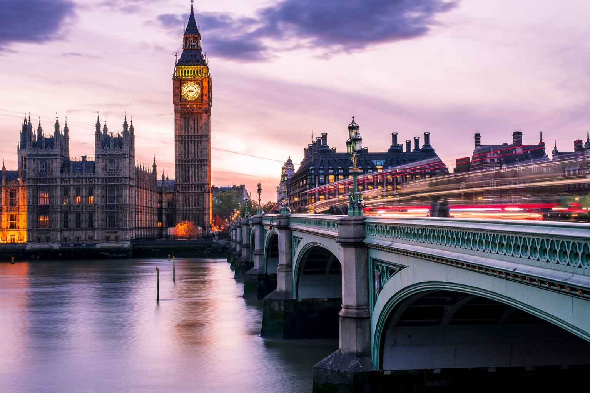

Blog de ciudades
Historia Rica: Londres está impregnada de historia, con monumentos icónicos como el Palacio de Buckingham, la Torre de Londres y el Parlamento Británico que ofrecen una mirada al pasado glorioso de la ciudad.
Teatro de Renombre: El West End de Londres es famoso por sus producciones teatrales de clase mundial, atrayendo a amantes del teatro de todas partes del mundo con espectáculos variados y de alta calidad.
Parques Hermosos: Londres cuenta con una abundancia de espacios verdes, como Hyde Park, Regent's Park y Hampstead Heath, que proporcionan un oasis de tranquilidad en medio del ajetreo urbano.
Escena Multicultural: Barrios como Camden Town y Brick Lane reflejan la diversidad cultural de Londres, ofreciendo una variedad de experiencias culinarias, musicales y artísticas de todo el mundo.
